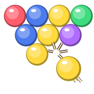

泡泡對戰
⛶
⚙️
選擇玩法

射泡泡,三顆同色就消掉,把泡泡塞給對手
怎麼玩
:射出去的泡泡碰到
三顆以上同色
就消掉; 跟天花板斷了連線的會
整串掉下來
。
掉得越多,塞給對手的排數越多。
被塞的泡泡會從
頂端整排插進來
(整片往下推);
天花板上亮起紅格子
時, 趕快消掉一些就能
抵銷
。每隔一段時間頂端也會自己多一排。泡泡越過
虛線
就輸了。
三個人以上時,只會塞給其中一個人
(預設隨機)。
🌐 連線對戰
🎮 單機練習
單機練習
玩法
練習
對電腦
對手
(幾台電腦)
1 台
2 台
3 台
電腦強度
(多台時只會往下配,不會比所選更強)
🙂 輕鬆
😎 普通
🔥 硬仗
🛠️ 自訂
自訂名單
(分別設定每台電腦)
賽制
💥 K.O. 賽
☠️ 淘汰賽
一局多久
2 分
3 分
5 分
更多對戰規則
暖身、攻擊目標、最後加速
開局暖身
(前幾秒沒有人會被塞)
關
10 秒
20 秒
攻擊目標
(兩台以上才有差)
🎲 隨機
👑 打第一名
最後 30 秒
(結尾加速)
一般
⏱️ 攻擊加倍
開始
連線對戰
你的暱稱(必填)
建立新房間
＋ 建立房間
或 · 加入朋友的房間
偵測目前房間中…
🔍
–
?
大
😀
等待中…
單機
練習
無盡
⏸
?
⚙
大
對戰設定
K.O. 賽 · 3 分鐘 · 累積排行
看玩法示範與攻擊說明
上面是示範:
左邊打掉一串
,右邊就
從頂端被塞一排
。
每個人拿到的
開局盤面與泡泡顏色順序完全一樣
—— 比的是誰射得準,不是誰運氣好。
三個人以上時,你送出的泡泡
只會塞給其中一個人
; 點對手的小盤可以
指定只打他
,再點一次改回隨機。
玩法
💥 K.O. 賽
☠️ 淘汰賽
一局多久
2 分
3 分
5 分
連線計分
🏆 累積排行
🎯 搶勝
先到
－
3
＋
勝奪冠
🔒 賽季進行中,重設戰績後才能改目標
↺ 重設戰績
更多規則
開局暖身、攻擊目標、結尾加速
開局暖身
(前幾秒沒有人會被塞)
關
10 秒
20 秒
攻擊目標
(三個人以上才有差)
🎲 隨機
👑 打第一名
最後 30 秒
(結尾加速)
一般
⏱️ 攻擊加倍
打掉
0
時間
0.0 秒
階
1
插排倒數
25
目標
隨機
已暫停
準備好了
本局結束
👍
😂
😭
🤝
😀
🏆 開新賽季
下一局
離開房間
再來一局
回選單
先看看盤面 👀
🏆 看結果
設定
外觀
主題
聲音與震動
遊戲音效
音量
震動
(手機)
背景音樂
曲目
音量
連線語音
音量與我的語音
收到語音音量
我的語音
(自己錄 · 連線可送)
編輯
完成
泡泡對戰 ·
· 開發者 Michael Ho
✕
傳給全部人
💬 一句話
🔊 語音短訊
⭐ 我的語音
🎤 語音留言
🎤
錄一段話送出(6 秒)
送出
✕
我的語音
自己錄 3 秒短語音,連線時可在互動面板當按鈕送給別人。
只存在這台裝置
,換裝置不會跟著走。
儲存
🎤 錄一段新的(3 秒)
0 / 6
🔊 點我播放語音
✕
怎麼操作
🚪
離開房間?
確定要離開這個房間嗎?
留在房間
離開房間
⚠️
移出玩家?
確定要把這位玩家移出房間嗎?
取消
移出房間